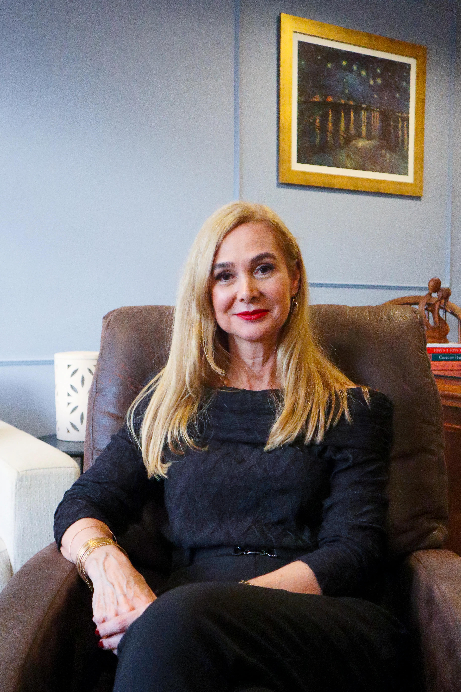

Corpo
A relação e as pazes com o corpo que você habita hoje.
Em 12 encontros terapêuticos, compreenda as transformações emocionais, corporais e relacionais do climatério e da menopausa. Descubra como atravessar essa fase com clareza sobre quem você é, o que deseja e como quer viver daqui para frente.
Quero fazer parte da Travessia →Você construiu uma história. Foi profissional, mãe, esposa, filha, cuidadora de tantas pessoas ao longo dos anos. Mas depois dos 40, alguma coisa começou a mudar silenciosamente:
Olha no espelho e não reconhece a mulher que vê — e não é apenas pelas mudanças no corpo.
Sente que o desejo diminuiu ou sumiu, e teme que a sua melhor versão já tenha ficado para trás.
Sente culpa por, depois de cuidar de tanta gente, colocar a si mesma em último lugar.
Vive conflitos no relacionamento, ou uma solidão difícil de explicar mesmo estando acompanhada.
Por fora, a rotina continua igual. Por dentro, surgem perguntas que quase nunca encontram espaço seguro para serem ditas em voz alta: “Quem sou eu agora?”; “Ainda sou desejável?”; “Por que meu relacionamento parece diferente?”
Se você se identifica com isso, entenda: nem tudo o que você está sentindo se resume a hormônios.
Quero entender o que estou vivendoOs hormônios oscilam, o sono muda, a disposição e o ritmo também. Mas existe uma dimensão dessa fase sobre a qual quase ninguém nos ensinou a falar: a própria mulher que você construiu ao longo da vida entra em questionamento.
Nenhum exame laboratorial responde às dúvidas mais profundas: Quem sou eu além de todos esses papéis? O que eu desejo para os meus próximos anos?
No Grupo Travessia, nós olhamos para essa transição a partir de quatro dimensões fundamentais:
A relação e as pazes com o corpo que você habita hoje.
Quem você é para além dos papéis que desempenhou a vida inteira.
Sexualidade, intimidade, erotismo e prazer na maturidade.
Seus relacionamentos, novas formas de comunicação e limites conscientes.
Existem fases da vida que não pedem que você volte a ser quem era. Pedem que você compreenda quem está se tornando.

Formada em Psicologia pela PUCRS há mais de 30 anos, sou Mestre em Psicologia Clínica pela PUCRS e especialista em Sexologia Clínica, Terapia Sistêmica Individual, Casal e Família e Psicodiagnóstico.
Minha trajetória também passa pela docência. Desde 1996, atuei como professora na UNISC, ULBRA e CEFI/FACEFI e, durante 14 anos, na Especialização em Terapia de Casal e Família da UFRGS.
Ao longo de mais de 30 anos de prática clínica, acompanhei centenas de mulheres, casais e grupos — e essa escuta me trouxe uma clareza que carrego até hoje: a maturidade feminina mexe diretamente com a identidade, os afetos e o desejo da mulher.
Foi dessa convicção que nasceu o Grupo Travessia.
Já conduzi outras turmas por essa mesma travessia e vi de perto mulheres recuperarem o desejo, se reconciliarem com o próprio corpo e voltarem a se sentir presentes na própria vida, não só na vida dos outros. Isso me confirma, turma após turma, que esse caminho funciona.
Mais do que técnica, eu compreendo o que cada mulher que chega até mim está vivendo. E é justamente com você que eu quero fazer essa travessia: te ajudar a recuperar o seu desejo, sua autonomia e o direito de se colocar em primeiro lugar de novo.
Quero me inscrever na turmaDurante a nossa Travessia, trabalhamos 3 movimentos essenciais: reconhecer a mulher que está emergindo agora; reorganizar suas relações e prioridades a partir dessa nova consciência; construir a próxima fase da sua vida com mais clareza, desejo e liberdade.
O processo acontece ao longo de 12 encontros semanais ao vivo via Google Meet (cerca de 1h30 cada), em um grupo fechado e intimista de até 10 mulheres:
Acolhimento, diagnóstico do momento atual e pacto de segurança do grupo.
As transformações dessa fase para além das mudanças físicas.
O que ficou para trás e os novos horizontes que se abrem.
Identidade e maturidade para além dos papéis sociais e familiares.
Como voltar a ocupar espaço central na sua própria história.
Corporalidade, intimidade e o que muda no desejo após os 40.
Vínculos afetivos, quebra de silêncios e novas formas de dialogar.
Uma compreensão profunda sobre prazer, fantasias e erotismo maduro.
O que você decide preservar, o que decide transformar e o que quer começar.
Integrando quem você foi à mulher potente que você é hoje.
Estruturação prática das suas decisões e caminhos futuros.
Reconhecimento do caminho percorrido e dos passos consolidados.
Pode parecer desconfortável pensar em falar sobre intimidade, corpo, envelhecimento e medos na frente de outras pessoas. Mas o Grupo Travessia não existe para expor ninguém e nem para ditar regras.
Cada mulher participa respeitando o seu próprio ritmo e seus limites.
Escutar outra mulher colocar em palavras sentimentos que você vivia em silêncio é, frequentemente, o caminho que faltava para você entender a sua própria dor. É um ambiente confidencial de validação, acolhimento e novas perspectivas.
Você não precisa atravessar essa etapa sozinha.
Sente mudanças profundas e quer trabalhá-las com suporte especializado
Quer resgatar o contato com seus desejos, seu prazer e suas decisões
Sente falta de um espaço maduro e confidencial para conversas reais
Valoriza a troca terapêutica com mulheres que compartilham da mesma fase de vida
Busca “fórmulas mágicas” ou soluções imediatistas para eliminar os sintomas da menopausa
Procura apenas prescrições ou informações médicas/hormonais puramente técnicas
Necessita de acompanhamento psiquiátrico de urgência ou psicoterapia individual imediata
Não tem abertura para escutar e conviver em um espaço coletivo de respeito mútuo
Ao passar pelo processo da Travessia, você conquista recursos para:
Trocar a angústia e a confusão por clareza emocional sobre o seu momento;
Olhar para o seu corpo com respeito e acolhimento, e não apenas como algo a ser consertado;
Reconectar-se com a sua energia erótica e o seu prazer sem culpas;
Estabelecer limites saudáveis e expressar necessidades nos relacionamentos;
Ocupar, com autoridade e autonomia, o lugar principal da sua própria vida.
Turma intimista de até 10 mulheres, conduzidos ao vivo pelo Google Meet.
Durante todo o período do grupo.
3 meses de acompanhamento ativo + 3 meses de sustentação pós-encontros.
Conteúdo exclusivo para aprofundar o processo.
Exercícios práticos de autorreflexão e escala de pontuação.
Áudio para presença e reconexão com o corpo.
Durante anos, a prioridade foram as demandas da família, dos filhos, do trabalho e do cuidado com terceiros. Agora, o investimento é no seu bem-estar e no desenho dos seus próximos anos.
Um ciclo completo de 12 consultas individuais com uma psicóloga clínica e sexóloga com mais de 30 anos de bagagem custaria entre R$ 3.600 e R$ 4.800.
Na experiência em grupo da Travessia, você recebe todo o acompanhamento técnico, a profundidade do processo e o acesso direto à mentora por uma condição exclusiva.
ou R$2.997,00 à vista
Quero garantir minha vaga na Travessia →Vagas estritamente limitadas a 10 mulheres, para preservar o sigilo e a qualidade da escuta.Participe do nosso primeiro encontro ao vivo, sinta a dinâmica do grupo e a condução terapêutica. Se você avaliar que não é o seu momento, basta solicitar o cancelamento em até 7 dias da compra e faremos o reembolso de 100% do seu valor investido, sem complicações.
Nosso compromisso é com a sua total segurança emocional e financeira.
Quero entrar com segurança🔒 Compra 100% segura • Ambiente protegido
Não. O Grupo Travessia acolhe mulheres em todos os momentos de vida e autoconhecimento, com ou sem histórico anterior de psicoterapia.
De forma alguma. Você participa das trocas no seu próprio tempo e dentro do seu limite de conforto. Ninguém é pressionada a compartilhar nada que não queira.
Sim. O grupo é pequeno exatamente para não gerar sensação de “plateia”. Muitas mulheres tímidas encontram enorme alívio apenas ao escutar e perceber que não estão sozinhas em suas vivências.
Sim. O sigilo e a ética profissional são pilares inegociáveis, formalizados por um acordo de confidencialidade entre todas as participantes no primeiro encontro.
Não. O grupo acolhe mulheres a partir dos 40 anos que estejam vivenciando qualquer fase dessa transição, desde os primeiros sinais do climatério/perimenopausa até a pós-menopausa.
Não. As reflexões sobre relacionamentos, desejo e maturidade são voltadas para a sua vivência individual, seja você casada, solteira, separada ou viúva.
Os encontros não são gravados. Como é um processo terapêutico em grupo, o sigilo e o anonimato de cada mulher são inegociáveis, e isso significa que os encontros existem só ali, ao vivo, entre quem está presente. Por isso, a participação é importante: em grupo, trabalhamos sentimentos, dúvidas, medos, anseios, psicoeducação e estratégias para lidar com essa fase, e a mudança acontece justamente ao longo do processo, através da sua presença, do seu comprometimento e do seu envolvimento com o grupo.
Eles são 100% online, ao vivo, através da plataforma Google Meet. Você participa de onde estiver, com privacidade e sem necessidade de deslocamento.
Você já cuidou de muita coisa e de muitas pessoas para chegar até aqui.
Se você sente que chegou a hora de olhar para si, desta vez você não precisa deixar isso para depois.
Quero fazer a minha Travessia